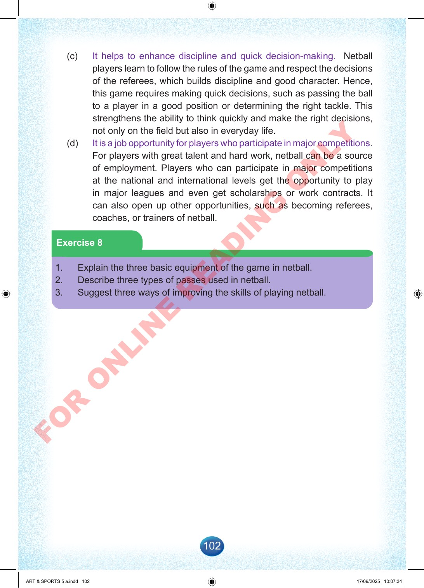

102
(c)
It
helps
to
enhance
discipline
and
quick
decision-making.
Netball
players
learn
to
follow
the
rules
of
the
game
and
respect
the
decisions
of
the
referees,
which
builds
discipline
and
good
character.
Hence,
this
game
requires
making
quick
decisions,
such
as
passing
the
ball
to
a
player
in
a
good
position
or
determining
the
right
tackle.
This
strengthens
the
ability
to
think
quickly
and
make
the
right
decisions,
not
only
on
the
field
but
also
in
everyday
life.
(d)
It
is
a
job
opportunity
for
players
who
participate
in
major
competitions.
For
players
with
great
talent
and
hard
work,
netball
can
be
a
source
of
employment.
Players
who
can
participate
in
major
competitions
at
the
national
and
international
levels
get
the
opportunity
to
play
in
major
leagues
and
even
get
scholarships
or
work
contracts.
It
can
also
open
up
other
opportunities,
such
as
becoming
referees,
coaches,
or
trainers
of
netball.
Exercise
8
1.
Explain
the
three
basic
equipment
of
the
game
in
netball.
2.
Describe
three
types
of
passes
used
in
netball.
3.
Suggest
three
ways
of
improving
the
skills
of
playing
netball.
ART
&
SPORTS
5
a.indd
102
ART
&
SPORTS
5
a.indd
102
17/09/2025
10:07:34
17/09/2025
10:07:34
F
O
R
O
N
L
I
N
E
R
E
A
D
I
N
G
O
N
L
Y